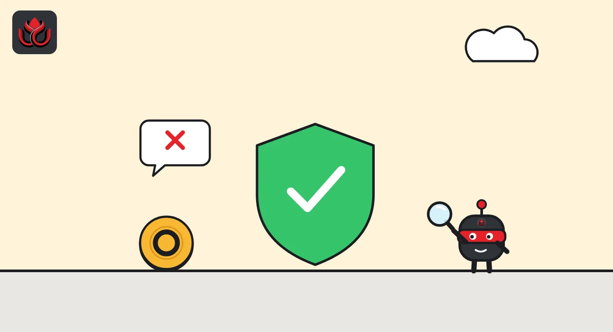
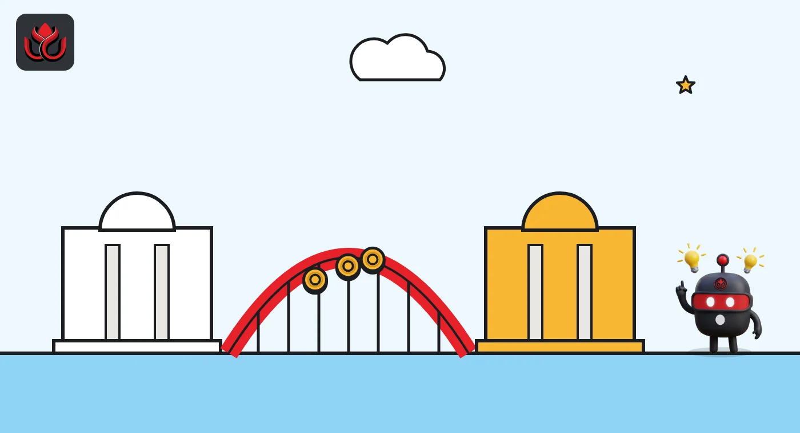

No interest, par redemption, stress tests: Singapore drafts its stablecoin law
MAS wants to ban interest on MAS-regulated stablecoins and recognize a few foreign ones. Seven weeks later, the central banks of Malaysia and Thailand joined its BLOOM project for cross-border digital money.
Key points
- On September 1, 2026, MAS proposed amendments to the Payment Services Act to put its single-currency stablecoin framework into law. Comments closed on October 16.
- The plan would ban interest on MAS-regulated stablecoins, require stress tests and wind-down plans, and let MAS recognize a limited number of foreign-issued stablecoins.
- On October 23, Bank Negara Malaysia and the Bank of Thailand joined MAS's BLOOM initiative, alongside nine new industry members including Ripple, Visa and Mastercard.
 What DeepSea's data shows
What DeepSea's data shows
Stablecoins already dominate crypto money moving through Asian exchanges. In the week of October 12 to 18, stablecoins made up 92% of the volume DeepSea tracked on Asian exchanges, according to its weekly smart money report. Net flows were -$2.20B, with $6.01B deposited and $8.20B withdrawn.
USDT led net withdrawals at -$2.16B. USDT0 lost $33.04M net, USDE $14.55M and USDC $9.22M. Ripple's RLUSD was the largest net deposit token at +$43.80M. Ripple is one of the new BLOOM members. DeepSea's flows cover labeled exchange wallets on Ethereum, Tron, Base, Arbitrum, Avalanche and Polygon, not BSC.

Data: DeepSea (desea.io), checked November 1, 2026, 11:28 p.m. ET.
What happened
The Monetary Authority of Singapore (MAS) published a consultation paper on September 1, 2026, proposing changes to the Payment Services Act 2019. The changes would give legal force to its MAS Single-Currency Stablecoin (MAS-SCS) framework. MAS finalized that framework in August 2023, after a public consultation in October 2022.
The framework covers single-currency stablecoins issued in Singapore and pegged to the Singapore dollar or any G10 currency. Only licensed issuers could describe their tokens as "MAS-regulated stablecoins". MAS says the label helps users tell well-regulated stablecoins apart from tokens that call themselves stablecoins but are not regulated to keep their value stable. Any other stablecoin would be treated as a digital payment token (DPT) and fall under the consumer safeguards that already apply to DPTs.
MAS took comments until October 16, 2026, through its consultation page. It has not yet published its response or a final bill.
What is new in the proposal
Beyond the core rules on value stability, capital, redemption at par (getting back exactly one unit of currency per coin) and disclosure, MAS asked for views on four further areas:
- Joint issuance: a stablecoin issued jointly by a Singapore issuer and a foreign issuer could carry the MAS-regulated label if risks are mitigated.
- Foreign stablecoins: MAS would recognize a limited number of foreign-issued stablecoins under comparable regimes, aimed at cross-border wholesale use.
- Financial stability: no interest paid on MAS-regulated stablecoins, mandatory stress testing, and plans for recovery and orderly wind-down.
- Consumer protection: issuers must safeguard customer money received before coins are issued.
Ho Hern Shin, MAS deputy managing director, said "trusted and well-regulated stablecoins can serve as a credible settlement asset" in tokenized markets.

BLOOM adds two central banks
On October 23, 2026, MAS said Bank Negara Malaysia (BNM) and the Bank of Thailand (BOT) joined BLOOM as policymaker members. BLOOM (Borderless, Liquid, Open, Online, Multi-currency) is a public and private project to agree common ways for digital money, including tokenized deposits and regulated stablecoins, to be accepted, exchanged and settled across borders.
Nine new industry participants joined too: Airwallex, Mastercard, Maybank, Monee, Nium, Ripple, ShopeePay, Visa and the World Bank Group. MAS lists the full membership in an annex to its release.
The group will work on three areas: how institutions accept and settle digital money across jurisdictions, how different systems can work together, and programmable controls such as identity checks and sanctions screening. MAS deputy managing director Leong Sing Chiong said "the future of finance will involve multiple forms of digital money". BNM's deputy governor said cross-border payments with several kinds of digital money are now closer to reality. The BOT said it would use BLOOM to shape its rules for tokenized money in cross-border payments and wholesale settlement, while keeping its oversight prudent.
Stablecoin net flows on Asian exchanges, October 12 to 18 2026
US$ million (absolute size)
Who feels it first
The label matters most for exchanges and payment firms in Singapore. Under the proposal, a stablecoin without the MAS-regulated label falls under the existing DPT consumer safeguards, MAS said. For users, that means the same treatment as other cryptocurrencies, not the stronger promises on reserves and redemption that come with the label.
For issuers, the joint issuance and foreign recognition ideas are the openings. A global issuer could pair with a Singapore entity to win the label, or seek recognition for wholesale cross-border use, as long as its home regime is comparable.
For banks, BLOOM is the practical side. MAS said shared frameworks should cut the need for each institution to set up separate arrangements with every counterparty or market, lowering cost and time to market. The World Bank Group's role is to bring in the needs of developing economies, MAS added.

Timeline
MAS first consults on a stablecoin framework
MAS publishes its response and the MAS-SCS framework
MAS consults on Payment Services Act amendments
Consultation closes
BNM and BOT join BLOOM with nine new industry members
LC Insight analysis
This section is our reading of the facts above, not a statement of fact.
- We think the interest ban is the line to watch. It stops MAS-regulated stablecoins from competing with bank deposits for savers, which suggests MAS sees them as a payment and settlement tool.
- The foreign recognition clause is narrow by design. The likely result is that only a few large, well-regulated dollar stablecoins get access for wholesale use, not a broad opening for retail.
- With Malaysia and Thailand inside BLOOM, Singapore is positioning its rules as a regional template. Whether other ASEAN regulators follow will shape where Southeast Asian stablecoin issuers set up.
What's next
- MAS response to feedback and the final bill
- Which foreign stablecoins MAS recognizes first
- BLOOM pilots involving Malaysian and Thai banks
Disclaimer. This article is based on public information and the sources listed below as of the update time shown. It is for information only and is not investment, legal or tax advice. Figures may change as companies and authorities publish new data.
Sources
- MAS, media release: MAS consults on legislative amendments to implement stablecoin regulatory framework (September 1, 2026)
- MAS, consultation page P015-2026
- MAS, media release: MAS finalises stablecoin regulatory framework (August 15, 2023)
- MAS, media release: MAS, BNM and BOT partner with industry through BLOOM (October 23, 2026)
- DeepSea, Weekly Smart Money and Global Money Flows Report, October 12 to 18 2026